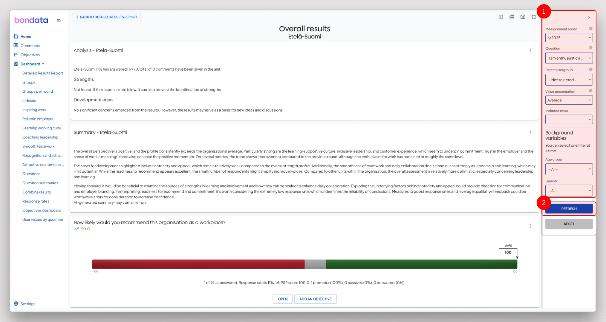
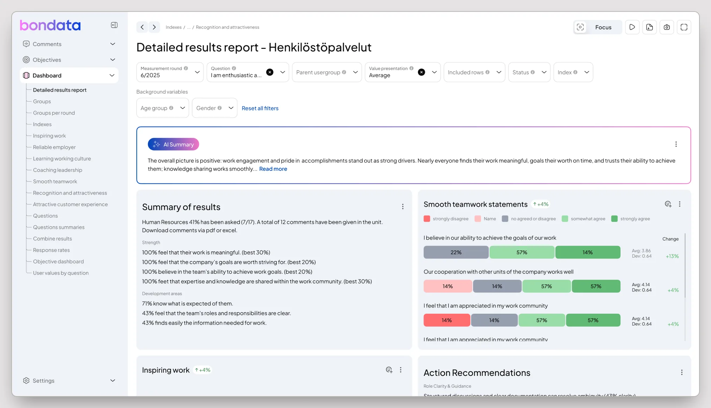
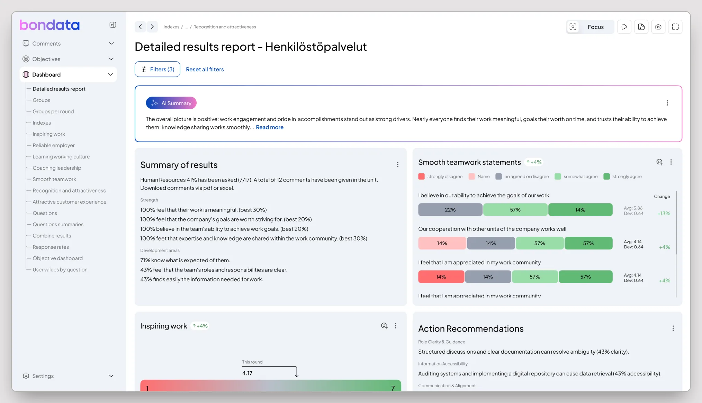

01
Twenty filters, in the wrong place
Up to 20 filters sat in a right-hand rail and changed nothing until you found Refresh at the bottom and pressed it. I moved them into a row above the content they control and made each one apply the moment it is set, so filtering went from set → Refresh → read to set → read. The row hides on scroll down and collapses to one sticky button; extra filters fold into "More".

- 1
Filters in a right-hand rail. People look for them along the top or on the left, so a third placement costs a scan of the page before the first click. Jakob's law.
- 2
A filter does nothing until you find Refresh at the bottom of the rail, so the page keeps showing numbers that no longer match the controls above them.

